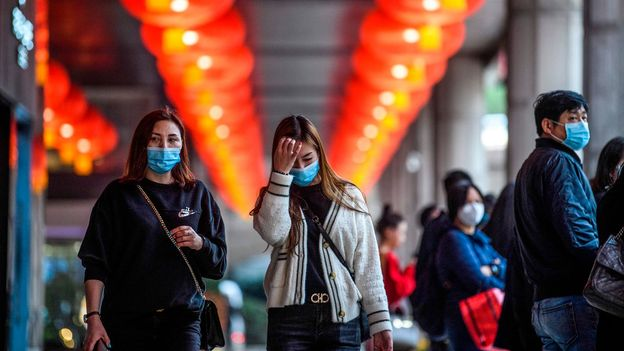
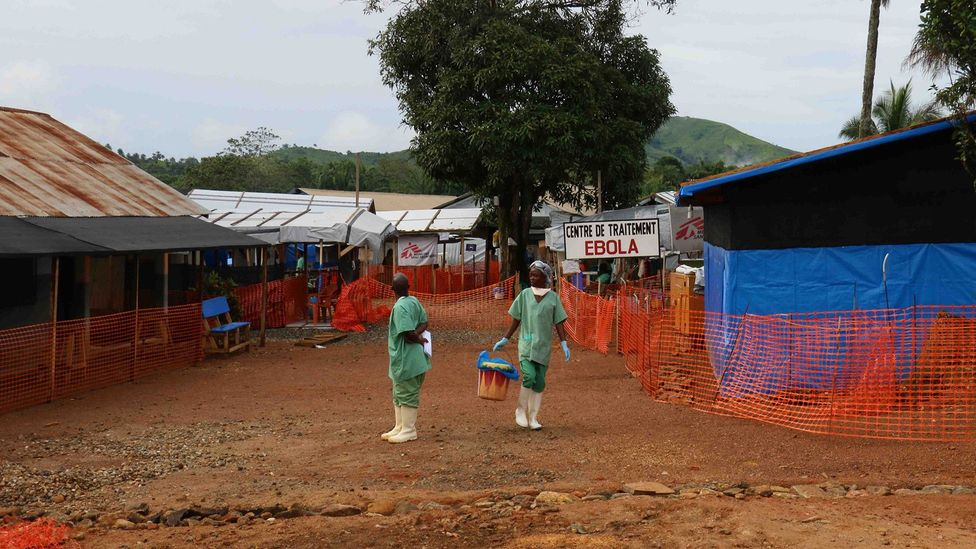
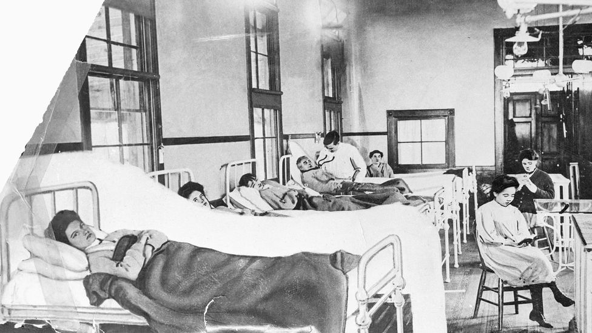

Who is 'patient zero' in the coronavirus outbreak?
As the cases of coronavirus increase in China and around the world, the hunt is on to identify 'patient zero'.But can singling out one person as causing an outbreak do more harm than good?
C
Chinese authorities and experts are at odds about the origin of the ongoing coronavirus outbreak.More specifically, who is 'patient zero' for the outbreak.Also known as an index case, patient zero is a term used to describe the first human infected by a viral or bacterial disease in an outbreak.
Advances in genetic analysis now make it possible to trace back the lineage of a virus through those it has infected.Combined with epidemiological studies, scientists can pinpoint individuals who may have been the first people to start spreading the disease and so trigger the outbreak.
Identifying who these people are can help address crucial questions about how, when and why it started.These can then help to prevent more people from getting infected now or in future outbreaks.
Do we know who patient zero is in the Covid-19 coronavirus outbreak that started in China?
The short answer is – no.
Chinese authorities originally reported that the first coronavirus case was on 31 December and many of the first cases of the pneumonia-like infection were immediately connected to a seafood and animal market in Wuhan, in the Hubei province.
You might also like:
• The row over the the new coronavirus name • How to fight a coronavirus • The places that escaped Spanish flu
This region is the epicentre of the outbreak, with almost 82% of the 75,000-plus cases registered so far in China and globally are from here, according to statistics complied by Johns Hopkins University.(
Read more about the global fight against coronavirus.)
The Huanan Seafood Wholesale Market was been linked to early cases of coronavirus and was quickly closed by the authorities (Credit: Getty Images)
However, a study, by Chinese researchers published in the Lancet medical journal, claimed the first person to be diagnosed with Covid-19, was on 1 December 2019 (a lot of earlier) and that person had 'no contact' with the Huanan Seafood Wholesale Market.
Wu Wenjuan, a senior doctor at Wuhan's Jinyintan Hospital and one of the authors of the study, told the BBC Chinese Service that the patient was an elderly man who suffered from Alzheimer's disease.
'He (the patient) lived four or five buses from the seafood market, and because he was sick he basically didn't go out,' Wu Wenjuan said.
She also said that three other people developed symptoms in the following days – two of whom had no exposure to Huanan either.
However, the researchers also found that 27 people of a sample of 41 patients admitted to hospital in the early stages of the outbreak 'had been exposed to the market'.
The hypothesis that the outbreak started at the market and could have been transmitted from a living animal to a human host before spreading human-to-human is still considered the most likely, according to the World Health Organization (WHO).
So can one person really trigger a massive outbreak?
The 2014 to 2016 Ebola outbreak in West Africa was the largest since the virus responsible was first discovered in 1976.It killed in excess of 11,000 people and infected over 28,000, according to the World Health Organization.
The outbreak lasted more than two years and was found in 10 countries, mostly in Africa but there were also cases reported in the US, Spain, the United Kingdom and Italy.
The Ebola outbreak that swept across West Africa has been traced to a young boy from Guinea who is thought to have caught the virus from bats (Credit: Getty Images)
Scientists concluded this outbreak of a new strain of Ebola started with just one person – a two-year-old boy from Guinea – who may have been infected by playing in a hollow tree housing a colony of bats.
They made the connection on an expedition to the boy's village, Meliandou, taking samples and chatting to locals to find out more about the Ebola outbreak's source before publishing their findings.
But perhaps the most well known 'patient zero' is Mary Mallon, who earned the nickname Typhoid Mary for causing an outbreak of typhoid fever in New York in 1906.
Originally from Ireland, Mallon emigrated to the US, where she began working for rich families as a cook.After clusters of typhoid cases among wealthy families in New York, doctors traced the outbreak to Mallon.Anywhere she worked, members of the household started to develop typhoid fever.
Doctors called her a healthy carrier – someone infected by a disease but who display little or no symptoms of the disease, which means they often go on to infect many other people.
There is now growing evidence that some people are more 'efficient' than others at spreading viruses and Mallon is one of the earliest recorded cases of a person having this 'ability' known as a 'super-spreader'.
At that time the disease afflicted several thousand New Yorkers annually and had a 10% fatality rate.
Mary Mallon was nicknamed Typhoid Mary after she was found to have caused infections in a number of wealthy families in New York (Credit: Getty Images)
But the term 'patient zero' comes loaded with meaning and stigma.Many health experts are against identifying the first documented case of an outbreak, for fear that it might lead to disinformation about the disease or even victimisation of the person.
A famous example is a man who was mistakenly identified as 'patient zero' of the Aids epidemic.
Gaetan Dugas, a Canadian homosexual flight attendant, is one of the most demonised patients in history, being blamed for spreading HIV to the US in the 1980s.But three decades later, scientists revealed he couldn't be the first case – a 2016 study showed the virus had moved from the Caribbean to America at the beginning of the 1970s.
Curiously, it was during the HIV epidemic that the term patient zero was accidently created.
Whilst investigating the spread of the disease in Los Angeles and San Francisco in the early 80s, researchers from the Centers for Disease Control and Prevention (CDC) used the letter 'O' to refer a case of someone 'outside the state of California'.
Other researchers wrongfully interpreted the letter as a number 0 – and so the concept of patient zero was born.
--
As an award-winning science site, BBC Future is committed to bringing you evidence-based analysis and myth-busting stories around the new coronavirus update.You can read more of our Covid-19 coverage here.
--
Join one million Future fans by liking us on Facebook , or follow us on Twitter or Instagram . If you liked this story, sign up for the weekly bbc.com features newsletter , called 'The Essential List'.A handpicked selection of stories from BBC Future, Culture, Worklife, and Travel, delivered to your inbox every Friday.
Posted On: 2020-02-23T00:00:00
Posted By: Fernando Duarte



Content Date: 2020-02-23
Download Date: 2021-04-08
Document ID: L0C049K3X